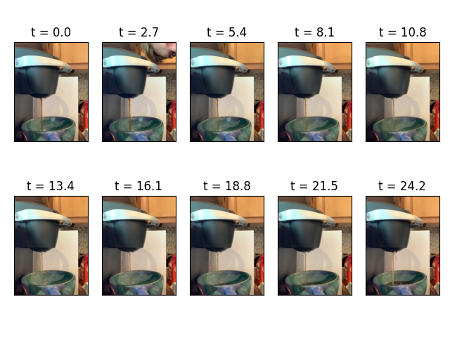

Coffee Brightness as a Function of Time
I was making coffee today and I came up with the following waste of time experiment: what would the darkness of coffee look like as a function of time as we brew it using a pour over method. I decided to record my Keurig for one brew and a second brew with the same beans with a white background and use OpenCV in python to make the plots.
Here are some snippets from the recording of the first brew:
We can see that the coffee stream is pretty much constant throughout brewing. Thus, although it might seem like we might want to use image segmentation or something complicated to extract the coffee stream (which I tried), in this case it is enough to zoom in on a sufficiently large rectangle inside the stream.
Here are two levels of magnification:
It is clear that the stream gets less brown over time because less beans are extracted. It's quite surprising how quickly the coffee is done extracting in the Keurig: we go from brown coffee to bland bean water in about 5-8 seconds! If we can understand how the lightness changes over time, we could set a threshold on how light we want the stream to be and only run the Keurig for that duration so that we ensure all our coffee is extracted.
To calculate the trend, I converted each of the frames (30 per second) to the HSL (Hue-Saturation-Lightness) space in cv2 and plotted the mean lightness over time. Here are the results:
Note that if we had an idea of the light reflectance of the coffee beans we could convert the above plots to get an idea of concentration of beans in the water. I couldn't find anything with a quick Google search though.
In any case, we can see that the water starts out dark and gets lighter and plateaus near the end.
Let's finally look at the plots for the second brewing:
Here we can see that the light fluctuates between two values that are in the top end range of the first brewing for both zoom levels. There is no clear trend. This makes sense because the water has very little saturation of coffee at this point and so there is not much change to observe.